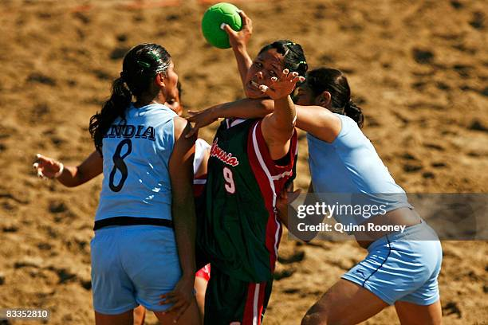

HISTORIA
ORIGEN DEL BALONMANO PLAYA.
En el año 1992 es cuando podemos decir que nace este nuevo deporte de verano, en una pequeña isla italiana donde se celebró el primer torneo. Giampiero Masi fue uno de los máximos exponentes y responsables del primer reglamento realizado a finales de los años 80.
Surge como respuesta a una demanda de los propios jugadores de Balonmano que, tras finalizar la temporadas regular, veían demasiado lejos el reencontrarse con la competición, los entrenamientos y con sus compañeros. Por este motivo, se crearon unas reglas que ayudaban a los deportistas a adaptarse a un terreno muy especial, la arena, primando especialmente la espectacularidad y la limpieza en el juego. Con el paso del tiempo, estas normas se han ido modificando, pero siempre buscando esos mismos objetivos.
El balonmano playa llegó a España entrando por el Océano Atlántico, siendo Cádiz su puerta de entrada. En el año 1993 la Playa de la Victoria fue escenario del primer Torneo de Balonmano Playa, aunque al año siguiente la Federación Gaditana de Balonmano presidida por Juan Antonio Romero Rube fue quien tomó relevo hasta el 2004, que cedió el testigo al Club Balonmano Gades.
El Balonmano Playa en Cádiz comenzó siendo un torneo de amigos, que cubría el objetivo, de seguir practicando balonmano en un periodo donde no había competiciones. Poco a poco esa idea fue cuajando y el Balonmano Playa iba interesando aún más a los que ya practicaban balonmano sala, sobre todo por ser un deporte rápido y espectacular.

A modo de resumen podría decirse que en un partido de BALONMANO PLAYA participan dos equipos compuestos por un máximo de ocho jugadores, actuando a la vez un portero y tres jugadores de campo. El juego se desarrolla en una cancha más pequeña que la del Balonmano (aproximadamente la mitad) con dos áreas de portería donde las líneas son rectas. De cara la puntuación, hay estipuladas unas condiciones para considerar que un gol es espectacular, y en ese caso se conceden dos puntos en lugar de uno. También vale dos puntos el gol marcado por el portero, convirtiendo a esta regla en una de las leyes fundamentales del reglamento que sabe “parar” cuando se defiende por otro que sabe “meter goles” cuando se ataca.
Con el paso del tiempo, el BALONMANO PLAYA se ha ido convirtiendo en “otro deporte” llegando a darse casos en que los equipos de profesionales del Balonmano no han conseguido ganar a equipos que juegan con asiduidad a BALONMANO PLAYA, a pesar de que casi todos los jugadores practican ambas disciplinas.
En la actualidad ya existen competiciones regladas por las diferentes federaciones, Real Federación Española de Balonmano, Federación Europea de Balonmano (EHF) y Federación Internacional de Balonmano (IHF). Así en España existen circuitos de ámbitos nacional y autonómicos, hay Campeonatos de Europa de clubes y Selecciones Nacionales y Campeonato del Mundo también de Selecciones Nacionales. De unos años a esta parte se viene luchando por la inclusión del BALONMANO PLAYA en unos Juegos Olímpicos.